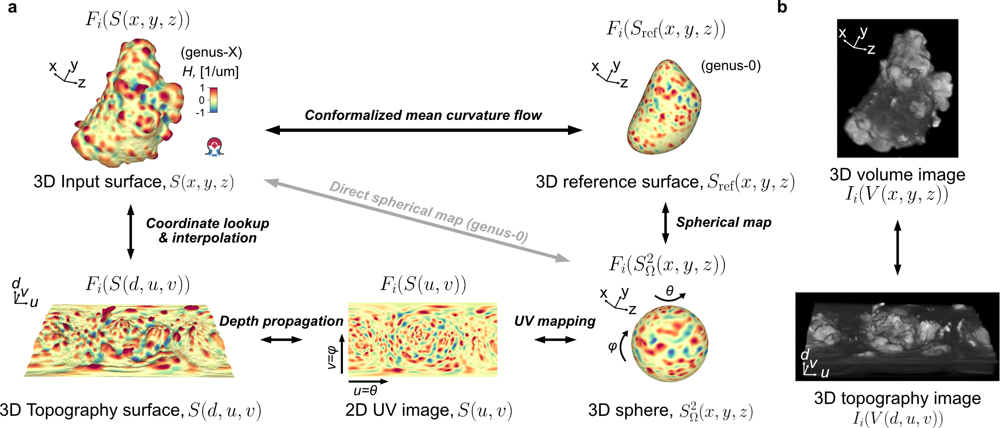

Standard workflow for unwrapping 3D surfaces#
This chapter will illustrate in code how to implement the illustrated standard workflow of mapping an input cell surface segmented from a microscopy image into other lower-dimensional representations which can be used for computing and visualization purposes. To illustrate the bijectivity of the transformations, we will keep track and transfer the mean curvature of the original surface \((H(S(x,y,z)))\).
u-Unwrap3D operates on the surface and image of a single cell. To process multiple cells from an instance segmentation, a for loop or parallel programming needs to be used for each individual cell.

A note on mathematical nomenclature#
We use \(S(\cdot)\), \(V(\cdot)\) to denote surfaces and their corresponding volumes respectively, where \(\cdot\) is the coordinate system.
We use \(F_i(S(\cdot))\) and \(F_i(V(\cdot))\) to denote a functional measurement \(i\) ‘displayed’ on the indicated surface or volume geometry. If not otherwise indicated, \(F_i\) is assumed to be measurements made of some feature of the input Cartesian surface, \(S(x,y,z)\) or its volume \(V(x,y,z)\).
Notation for surface geometry:
\(S(x,y,z)\): input 3D Cartesian \((x,y,z)\) surface
\(S_{\text{ref}}(x,y,z)\): reference 3D Cartesian \((x,y,z)\) surface
\(S_{\text{ref}}(r,\theta,\phi)\): 3D spherical parameterization of \(S_{\text{ref}}(x,y,z)\)
\(S_{\text{ref}}^{\mathcal{Q}}(r,\theta,\phi)\): (quasi-)conformal spherical parameterization of \(S_{\text{ref}}(x,y,z)\)
\(S_{\text{ref}}^{\Omega}(r,\theta,\phi)\): (quasi-)equiareal spherical parameterization of \(S_{\text{ref}}(x,y,z)\)
\(S_{\text{ref}}(u,v)\): 2D uv parameterization of \(S_{\text{ref}}(x,y,z)\)
\(S(d,u,v)\): 3D topographic surface of \(S(x,y,z)\), relative to \(S_{\text{ref}}(x,y,z)\)
Notation for volume geometry:
\(V(x,y,z)\): volume of the input 3D Cartesian \((x,y,z)\) surface, equivalent to the binary volume from which the surface was extracted from
\(V_{\text{ref}}(x,y,z)\): volume of the reference 3D Cartesian \((x,y,z)\) surface, usually obtained from voxelization of the surface
\(V_{\text{ref}}(r,\theta,\phi)\): volume of the 3D spherical parameterization of \(S_{\text{ref}}(x,y,z)\)
\(V(d,u,v)\): volume of the 3D topographic surface of \(S(x,y,z)\), relative to \(S_{\text{ref}}(x,y,z)\). Note: this volume is typically only a shell of \(V(x,y,z)\), as we often do not map the entirety of the internal cell when constructing the topographic space.